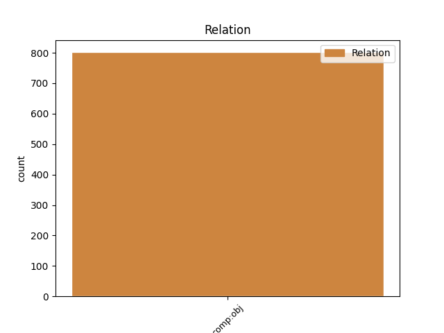
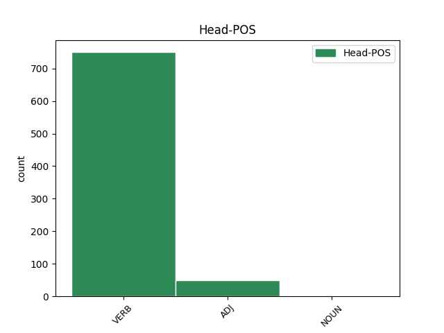
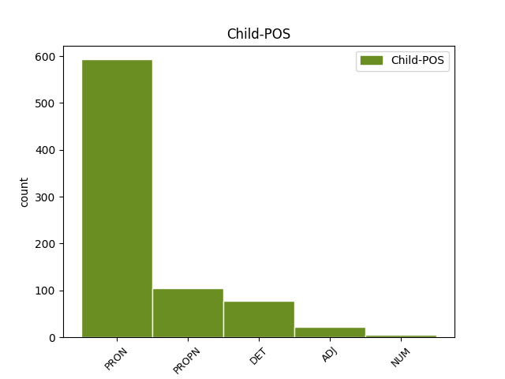

Distribution of features within this leaf



Agreement Rules sorted by frequency.
- When the dependent token is the direct object complements(comp:obj) of the head token, and the dependent token is PRON.
1 Njegova _ _ _ _ 0 _ _ _
2 slikarska _ _ _ _ 0 _ _ _
3 ustvarjalnost _ _ _ _ 0 _ _ _
4 je _ _ _ _ 0 _ _ _
5 v _ _ _ _ 0 _ _ _
6 primerjavi _ _ _ _ 0 _ _ _
7 s _ _ _ _ 0 _ _ _
8 kakim _ _ _ _ 0 _ _ _
9 Rafaelom _ _ _ _ 0 _ _ _
10 izrazito _ _ _ _ 0 _ _ _
11 borna _ _ _ _ 0 _ _ _
12 : _ _ _ _ 0 _ _ _
13 zapustil _ _ _ _ 0 _ _ _
14 je _ _ _ _ 0 _ _ _
15 samo _ _ _ _ 0 _ _ _
16 kakih _ _ _ _ 0 _ _ _
17 petnajst _ _ _ _ 0 _ _ _
18 slik _ _ _ _ 0 _ _ _
19 od _ _ _ _ 0 _ _ _
20 tistih _ _ _ _ 0 _ _ _
21 tridesetih _ _ _ _ 0 _ _ _
22 , _ _ _ _ 0 _ _ _
23 ki _ _ _ _ 0 _ _ _
24 jih on PRON Pp3mpa--y Case=Acc|Gender=Masc|Number=Plur|Person=3|PronType=Prs|Variant=Short 30 comp:obj _ Dep=30|Rel=Obj
25 je _ _ _ _ 0 _ _ _
26 bil _ _ _ _ 0 _ _ _
27 v _ _ _ _ 0 _ _ _
28 tem _ _ _ _ 0 _ _ _
29 obdobju _ _ _ _ 0 _ _ _
30 ustvaril ustvariti VERB Vmep-sm Aspect=Perf|Gender=Masc|Number=Sing|VerbForm=Part 0 _ _ _
31 ali _ _ _ _ 0 _ _ _
32 zastavil _ _ _ _ 0 _ _ _
33 . _ _ _ _ 0 _ _ _
1 Ko _ _ _ _ 0 _ _ _
2 je _ _ _ _ 0 _ _ _
3 pozdravila _ _ _ _ 0 _ _ _
4 svoja _ _ _ _ 0 _ _ _
5 soigralca _ _ _ _ 0 _ _ _
6 v _ _ _ _ 0 _ _ _
7 filmu _ _ _ _ 0 _ _ _
8 , _ _ _ _ 0 _ _ _
9 Johna _ _ _ _ 0 _ _ _
10 Cusacka _ _ _ _ 0 _ _ _
11 in _ _ _ _ 0 _ _ _
12 Billyja _ _ _ _ 0 _ _ _
13 Crystala _ _ _ _ 0 _ _ _
14 , _ _ _ _ 0 _ _ _
15 je _ _ _ _ 0 _ _ _
16 objela objeti VERB Vmep-sf Aspect=Perf|Gender=Fem|Number=Sing|VerbForm=Part 0 _ _ _
17 tudi _ _ _ _ 0 _ _ _
18 prelepo _ _ _ _ 0 _ _ _
19 Catherine Catherine PROPN Npfsa Case=Acc|Gender=Fem|Number=Sing 16 comp:obj _ Dep=16|Rel=Obj
20 Zeta _ _ _ _ 0 _ _ _
21 - _ _ _ _ 0 _ _ _
22 Jones _ _ _ _ 0 _ _ _
23 . _ _ _ _ 0 _ _ _
1 Prav _ _ _ _ 0 _ _ _
2 vse ves DET Pg-fpa Case=Acc|Gender=Fem|Number=Plur|PronType=Tot 4 comp:obj _ Dep=4|Rel=Obj
3 smo _ _ _ _ 0 _ _ _
4 prebrale prebrati VERB Vmep-pf Aspect=Perf|Gender=Fem|Number=Plur|VerbForm=Part 0 _ _ _
5 , _ _ _ _ 0 _ _ _
6 dokler _ _ _ _ 0 _ _ _
7 jih _ _ _ _ 0 _ _ _
8 ni _ _ _ _ 0 _ _ _
9 zmanjkalo _ _ _ _ 0 _ _ _
10 . _ _ _ _ 0 _ _ _
1 To _ _ _ _ 0 _ _ _
2 je _ _ _ _ 0 _ _ _
3 argument _ _ _ _ 0 _ _ _
4 , _ _ _ _ 0 _ _ _
5 ki _ _ _ _ 0 _ _ _
6 ga _ _ _ _ 0 _ _ _
7 je _ _ _ _ 0 _ _ _
8 pogosto _ _ _ _ 0 _ _ _
9 slišati _ _ _ _ 0 _ _ _
10 od _ _ _ _ 0 _ _ _
11 nasprotnikov _ _ _ _ 0 _ _ _
12 ureditve _ _ _ _ 0 _ _ _
13 pravic _ _ _ _ 0 _ _ _
14 , _ _ _ _ 0 _ _ _
15 čeprav _ _ _ _ 0 _ _ _
16 nikoli _ _ _ _ 0 _ _ _
17 detajlno _ _ _ _ 0 _ _ _
18 ne _ _ _ _ 0 _ _ _
19 pojasnijo _ _ _ _ 0 _ _ _
20 , _ _ _ _ 0 _ _ _
21 kako _ _ _ _ 0 _ _ _
22 bi _ _ _ _ 0 _ _ _
23 istospolne _ _ _ _ 0 _ _ _
24 zveze _ _ _ _ 0 _ _ _
25 sploh _ _ _ _ 0 _ _ _
26 lahko _ _ _ _ 0 _ _ _
27 ogrožale ogrožati VERB Vmpp-pf Aspect=Imp|Gender=Fem|Number=Plur|VerbForm=Part 0 _ _ _
28 heteroseksualne heteroseksualen ADJ Agpfpa Case=Acc|Degree=Pos|Gender=Fem|Number=Plur 27 comp:obj _ Dep=27|Rel=Obj|SpaceAfter=No
29 . _ _ _ _ 0 _ _ _
1 Takšno _ _ _ _ 0 _ _ _
2 ravnanje _ _ _ _ 0 _ _ _
3 ne _ _ _ _ 0 _ _ _
4 bi _ _ _ _ 0 _ _ _
5 bilo _ _ _ _ 0 _ _ _
6 v _ _ _ _ 0 _ _ _
7 prid _ _ _ _ 0 _ _ _
8 niti _ _ _ _ 0 _ _ _
9 zmernemu _ _ _ _ 0 _ _ _
10 pitju _ _ _ _ 0 _ _ _
11 , _ _ _ _ 0 _ _ _
12 kajti _ _ _ _ 0 _ _ _
13 od _ _ _ _ 0 _ _ _
14 tisoč _ _ _ _ 0 _ _ _
15 pivcev _ _ _ _ 0 _ _ _
16 ne _ _ _ _ 0 _ _ _
17 boste _ _ _ _ 0 _ _ _
18 našli najti VERB Vmep-pm Aspect=Perf|Gender=Masc|Number=Plur|VerbForm=Part 0 _ _ _
19 niti _ _ _ _ 0 _ _ _
20 enega en NUM Mlpmsg Case=Gen|Gender=Masc|Number=Sing|NumForm=Word|NumType=Card 18 comp:obj _ Dep=18|Rel=Obj|SpaceAfter=No
21 , _ _ _ _ 0 _ _ _
22 ki _ _ _ _ 0 _ _ _
23 bi _ _ _ _ 0 _ _ _
24 mu _ _ _ _ 0 _ _ _
25 bilo _ _ _ _ 0 _ _ _
26 všeč _ _ _ _ 0 _ _ _
27 , _ _ _ _ 0 _ _ _
28 da _ _ _ _ 0 _ _ _
29 mu _ _ _ _ 0 _ _ _
30 o _ _ _ _ 0 _ _ _
31 alkoholu _ _ _ _ 0 _ _ _
32 pridiga _ _ _ _ 0 _ _ _
33 sovražnik _ _ _ _ 0 _ _ _
34 alkohola _ _ _ _ 0 _ _ _
35 . _ _ _ _ 0 _ _ _
Disagree Examples:
1 Dekle _ _ _ _ 0 _ _ _
2 je _ _ _ _ 0 _ _ _
3 ob _ _ _ _ 0 _ _ _
4 vzvratni _ _ _ _ 0 _ _ _
5 vožnji _ _ _ _ 0 _ _ _
6 začelo _ _ _ _ 0 _ _ _
7 vpiti _ _ _ _ 0 _ _ _
8 , _ _ _ _ 0 _ _ _
9 da _ _ _ _ 0 _ _ _
10 bi _ _ _ _ 0 _ _ _
11 jo on PRON Pp3fsa--y Case=Acc|Gender=Fem|Number=Sing|Person=3|PronType=Prs|Variant=Short 12 comp:obj _ Dep=12|Rel=Obj
12 utišal utišati VERB Vmep-sm Aspect=Perf|Gender=Masc|Number=Sing|VerbForm=Part 0 _ _ _
13 , _ _ _ _ 0 _ _ _
14 sem _ _ _ _ 0 _ _ _
15 prijel _ _ _ _ 0 _ _ _
16 nož _ _ _ _ 0 _ _ _
17 . _ _ _ _ 0 _ _ _
1 Tega ta DET Pd-nsg Case=Gen|Gender=Neut|Number=Sing|PronType=Dem 5 comp:obj _ Dep=5|Rel=Obj
2 se _ _ _ _ 0 _ _ _
3 sploh _ _ _ _ 0 _ _ _
4 nisem _ _ _ _ 0 _ _ _
5 zavedel zavesti VERB Vmep-sm Aspect=Perf|Gender=Masc|Number=Sing|VerbForm=Part 0 _ _ _
6 . _ _ _ _ 0 _ _ _
1 V _ _ _ _ 0 _ _ _
2 bolnišnici _ _ _ _ 0 _ _ _
3 so _ _ _ _ 0 _ _ _
4 že _ _ _ _ 0 _ _ _
5 pred _ _ _ _ 0 _ _ _
6 časom _ _ _ _ 0 _ _ _
7 pripravili pripraviti VERB Vmep-pm Aspect=Perf|Gender=Masc|Number=Plur|VerbForm=Part 0 _ _ _
8 vse _ _ _ _ 0 _ _ _
9 potrebno potreben ADJ Agpnsa Case=Acc|Degree=Pos|Gender=Neut|Number=Sing 7 comp:obj _ Dep=7|Rel=Obj
10 za _ _ _ _ 0 _ _ _
11 negovanje _ _ _ _ 0 _ _ _
12 bolnikov _ _ _ _ 0 _ _ _
13 , _ _ _ _ 0 _ _ _
14 pri _ _ _ _ 0 _ _ _
15 katerih _ _ _ _ 0 _ _ _
16 je _ _ _ _ 0 _ _ _
17 bilo _ _ _ _ 0 _ _ _
18 zdravljenje _ _ _ _ 0 _ _ _
19 končano _ _ _ _ 0 _ _ _
20 . _ _ _ _ 0 _ _ _
1 Temu ta DET Pd-nsd Case=Dat|Gender=Neut|Number=Sing|PronType=Dem 2 comp:obj _ Dep=2|Rel=Obj
2 primerna primeren ADJ Agpfsn Case=Nom|Degree=Pos|Gender=Fem|Number=Sing 0 _ _ _
3 je _ _ _ _ 0 _ _ _
4 tudi _ _ _ _ 0 _ _ _
5 notranjost _ _ _ _ 0 _ _ _
6 kabine _ _ _ _ 0 _ _ _
7 , _ _ _ _ 0 _ _ _
8 izpeljana _ _ _ _ 0 _ _ _
9 je _ _ _ _ 0 _ _ _
10 iz _ _ _ _ 0 _ _ _
11 masterja _ _ _ _ 0 _ _ _
12 in _ _ _ _ 0 _ _ _
13 se _ _ _ _ 0 _ _ _
14 po _ _ _ _ 0 _ _ _
15 udobju _ _ _ _ 0 _ _ _
16 lahko _ _ _ _ 0 _ _ _
17 primerja _ _ _ _ 0 _ _ _
18 z _ _ _ _ 0 _ _ _
19 osebnim _ _ _ _ 0 _ _ _
20 avtomobilom _ _ _ _ 0 _ _ _
21 . _ _ _ _ 0 _ _ _
1 V _ _ _ _ 0 _ _ _
2 deželni _ _ _ _ 0 _ _ _
3 vladi _ _ _ _ 0 _ _ _
4 so _ _ _ _ 0 _ _ _
5 uredili _ _ _ _ 0 _ _ _
6 Urad _ _ _ _ 0 _ _ _
7 za _ _ _ _ 0 _ _ _
8 narodnostne _ _ _ _ 0 _ _ _
9 manjšine _ _ _ _ 0 _ _ _
10 in _ _ _ _ 0 _ _ _
11 jim on PRON Pp3fpd--y Case=Dat|Gender=Fem|Number=Plur|Person=3|PronType=Prs|Variant=Short 12 comp:obj _ Dep=12|Rel=Obj
12 dali dati VERB Vmep-pm Aspect=Perf|Gender=Masc|Number=Plur|VerbForm=Part 0 _ _ _
13 vedeti _ _ _ _ 0 _ _ _
14 , _ _ _ _ 0 _ _ _
15 da _ _ _ _ 0 _ _ _
16 so _ _ _ _ 0 _ _ _
17 za _ _ _ _ 0 _ _ _
18 njih _ _ _ _ 0 _ _ _
19 pomembne _ _ _ _ 0 _ _ _
20 in _ _ _ _ 0 _ _ _
21 da _ _ _ _ 0 _ _ _
22 spoštujejo _ _ _ _ 0 _ _ _
23 ter _ _ _ _ 0 _ _ _
24 podpirajo _ _ _ _ 0 _ _ _
25 njihova _ _ _ _ 0 _ _ _
26 hotenja _ _ _ _ 0 _ _ _
27 , _ _ _ _ 0 _ _ _
28 njihovo _ _ _ _ 0 _ _ _
29 identiteto _ _ _ _ 0 _ _ _
30 v _ _ _ _ 0 _ _ _
31 kulturnem _ _ _ _ 0 _ _ _
32 in _ _ _ _ 0 _ _ _
33 jezikovnem _ _ _ _ 0 _ _ _
34 smislu _ _ _ _ 0 _ _ _
35 . _ _ _ _ 0 _ _ _